JULIA HUIMING WANG
ABOUT
I am a PhD Student in Tatiana Engel's Laboratory at Cold Spring Harbor Laboratory. My thesis research has been focused on unsupervised learning techniques for describing brain states. Previously, I obtained my B.S. in Computer Science from Stanford University, where I was a research tech in Stephen Baccus's lab, studying deep learning models of the retina. General research interests include brain states, learning & memory, and neural manifolds.
Neuroscience
AI
Education
Service
PROJECTS
Click to learn more about some of the research projects that I have worked on during PhD and Undergrad.
Brain States
A manifold of heterogeneous vigilance states across cortical areas
Presented at SFN 2021, COSYNE 2022, SFN 2022
Retina Models
Deep learning models of the retina show ethological relevance and correspondence to interneurons
Biological Normalization Strategies
Biologically inspired normalization patterns in Deep Neural Networks compare to existing methods
OUTREACH
My proudest moments have been in service and education. I am driven by two main goals: increasing diversity & inclusion in STEM and Tech, and service and justice for the disablility community.
DIAS / Vice President
DIAS is CSHL's diversity organization for trainees. We exist to support trainees from underrepresented groups, such as URMs, LGBTQIA+, and disability.
Practical Programming Lecture Series / Organizer
The Practical Programming series aims to bring together members of the QB community and share practical knowledge for computational work.
URP Python Course / Organizer & Lecturer
An introductory python course for undergraduate research participants (URPs).
Kids with Dreams / President
Kids with Dreams is Stanford's only organization dedicated to working with individuals with disabilites. We service over 400 families in the Bay Area and provide 100+ hours of programming a quarter through 10+ programs. We partner Stanford volunteers with local community organizations as well as organize many of our own programs and events.
AI4ALL / Teaching Assistant
AI4ALL started as a summer program at Stanford for high school girls to introduce them to AI and CS. It is now a non-profit with 16 sites across the country, targeting different underrepresented demographics. I was involved as a TA & program evaluator for the Stanford and UW chapters
Stanford ResEd / Resident Computer Consultant
As an RCC, similar to an RA, mentored and assisted freshman. Planned dorm-wide activities and trips such as to Monterey Bay Aquarium, Yosemite, and cultural cook nights.
Classes Taught
Diverse Perspectives on Disabilities (Stanford)
Introduction to Computing at Stanford (Stanford)
Peer Counseling (Stanford)
Coding Camp for Girls (CSHL)
ARTWORK
I am just an amateur baker/painter/photographer?
 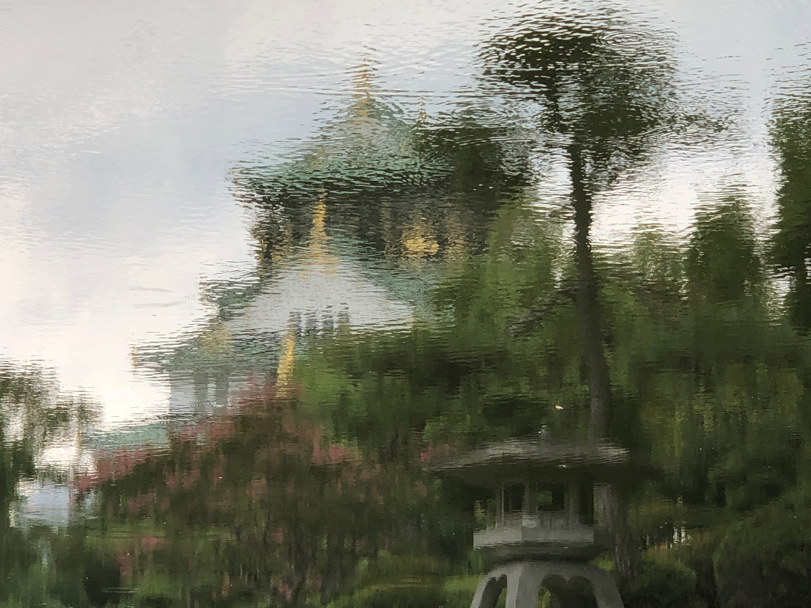
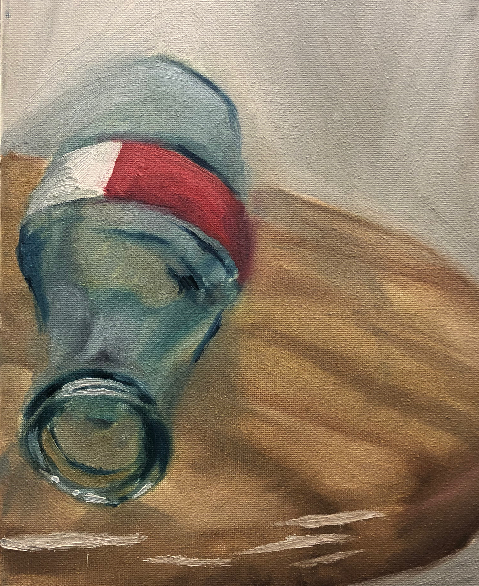
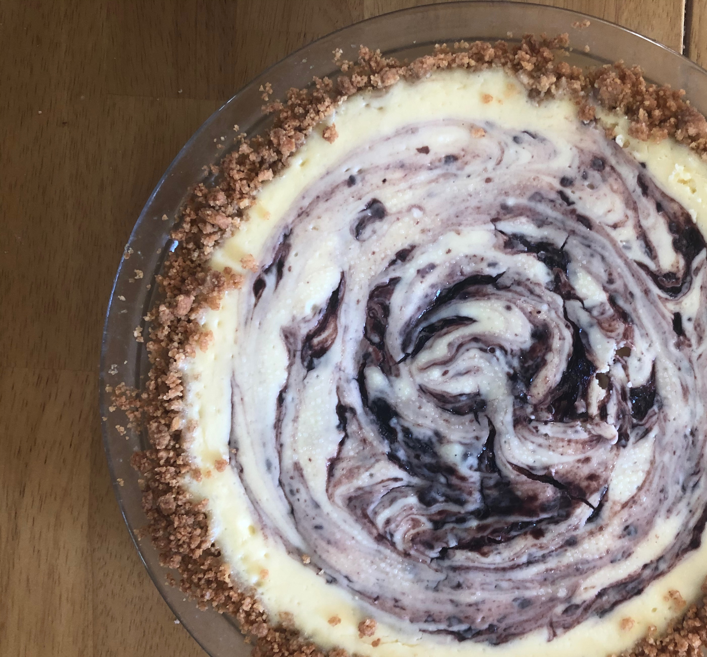
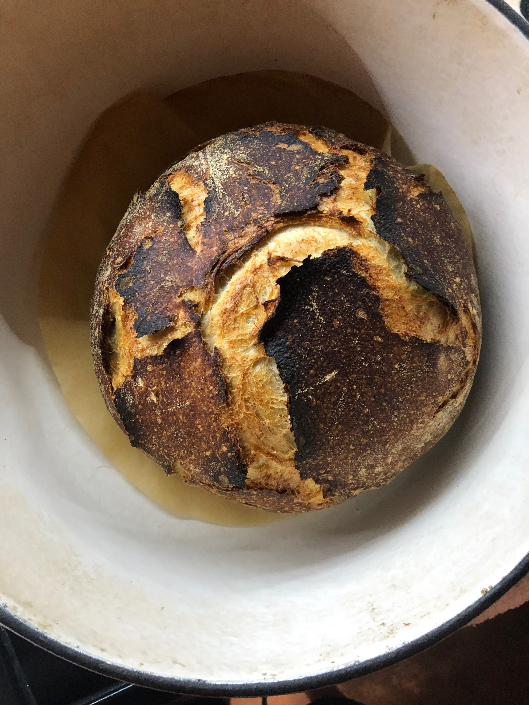
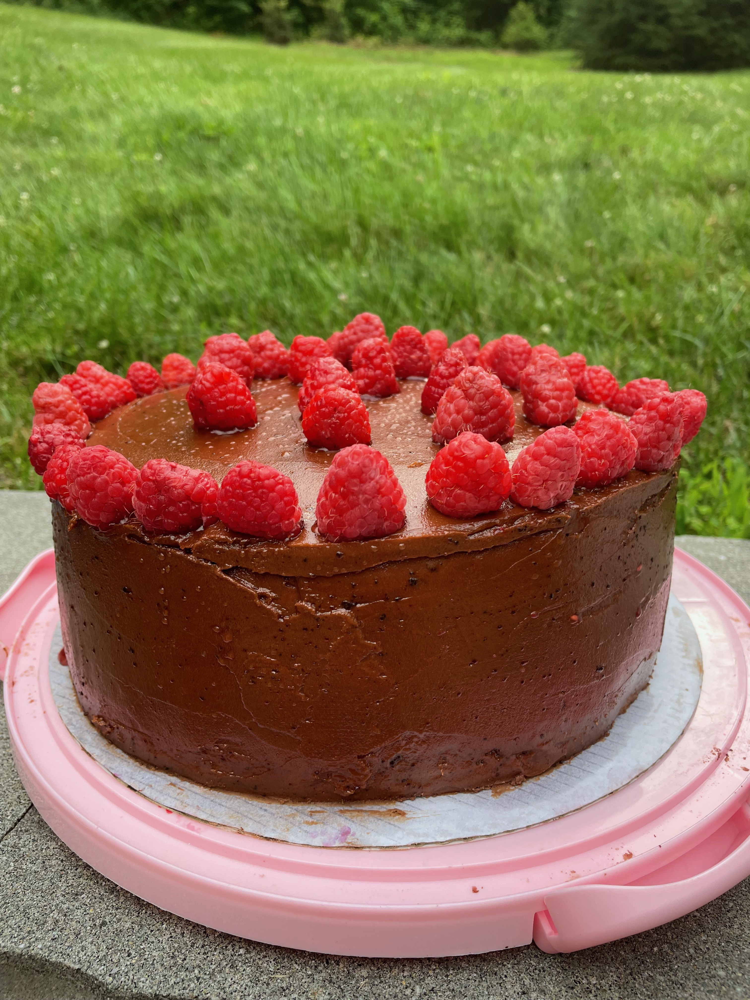
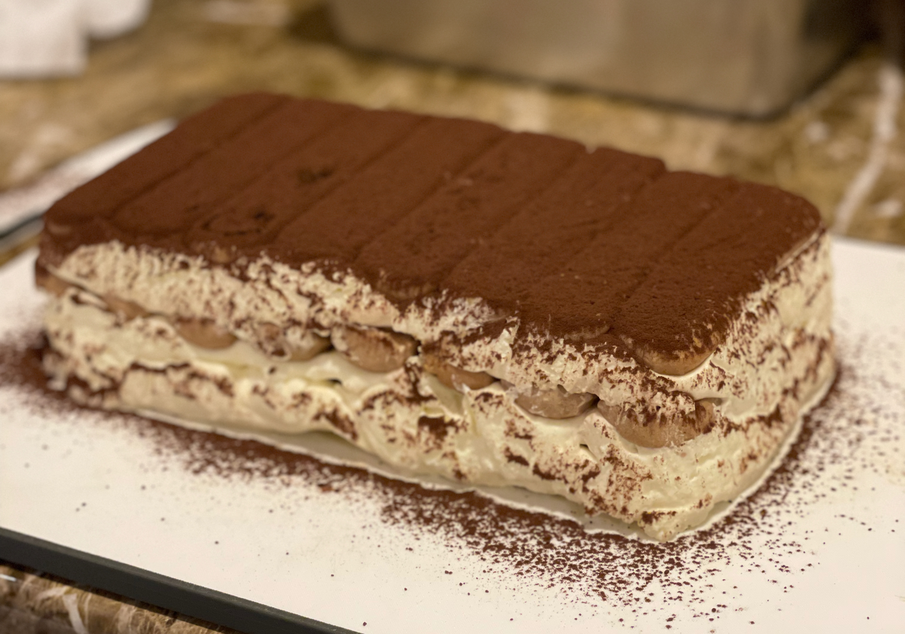
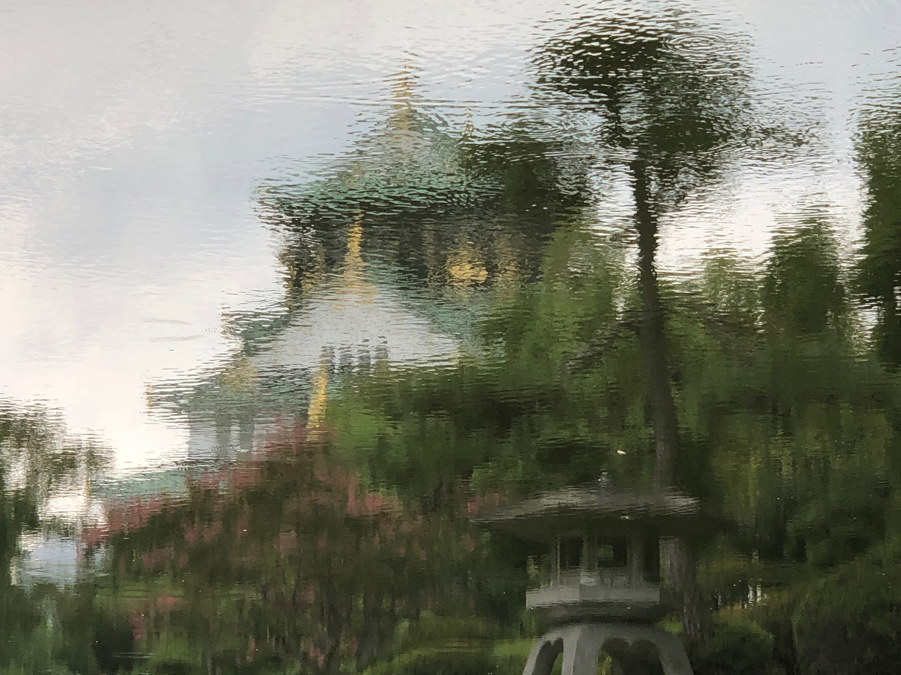
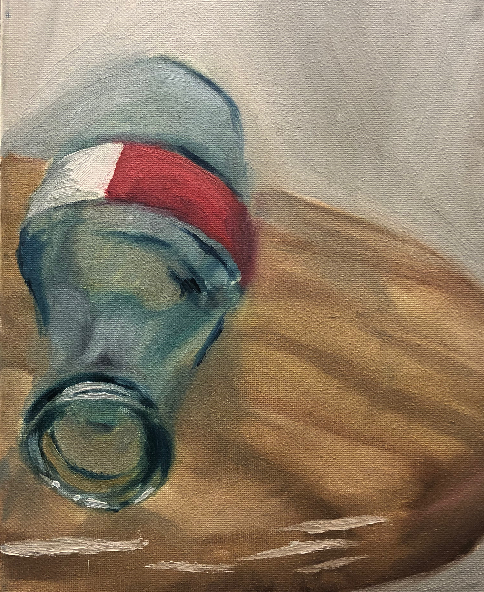
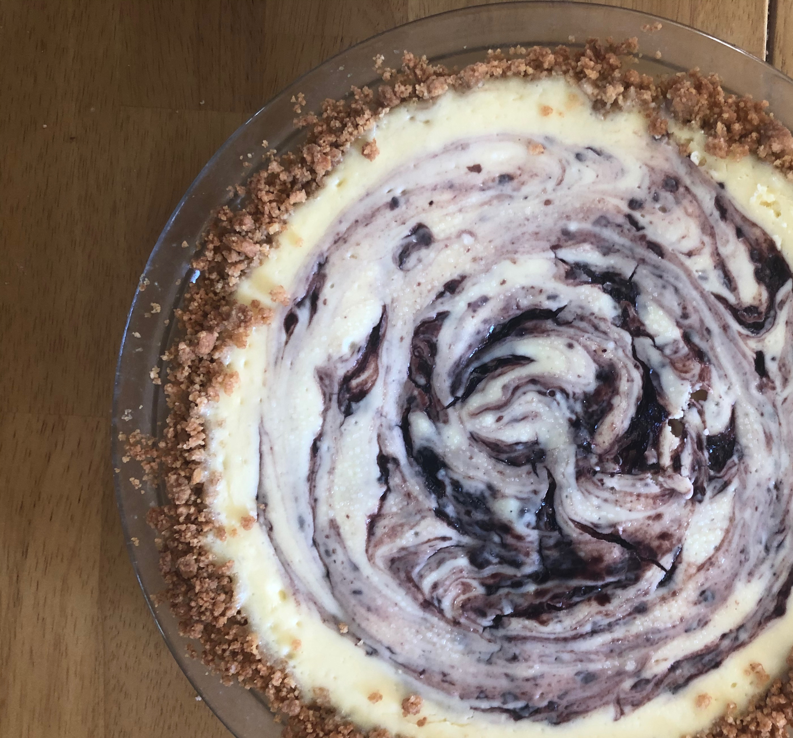
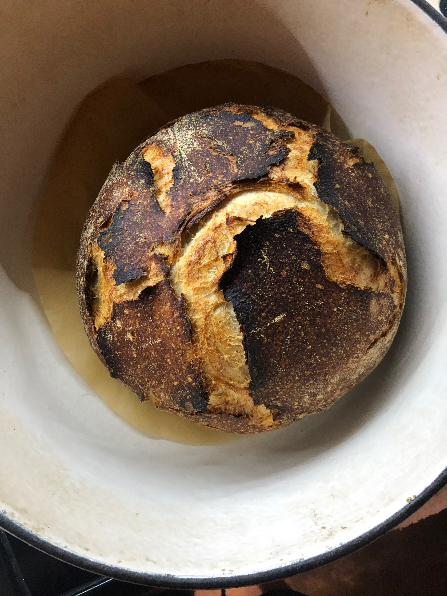
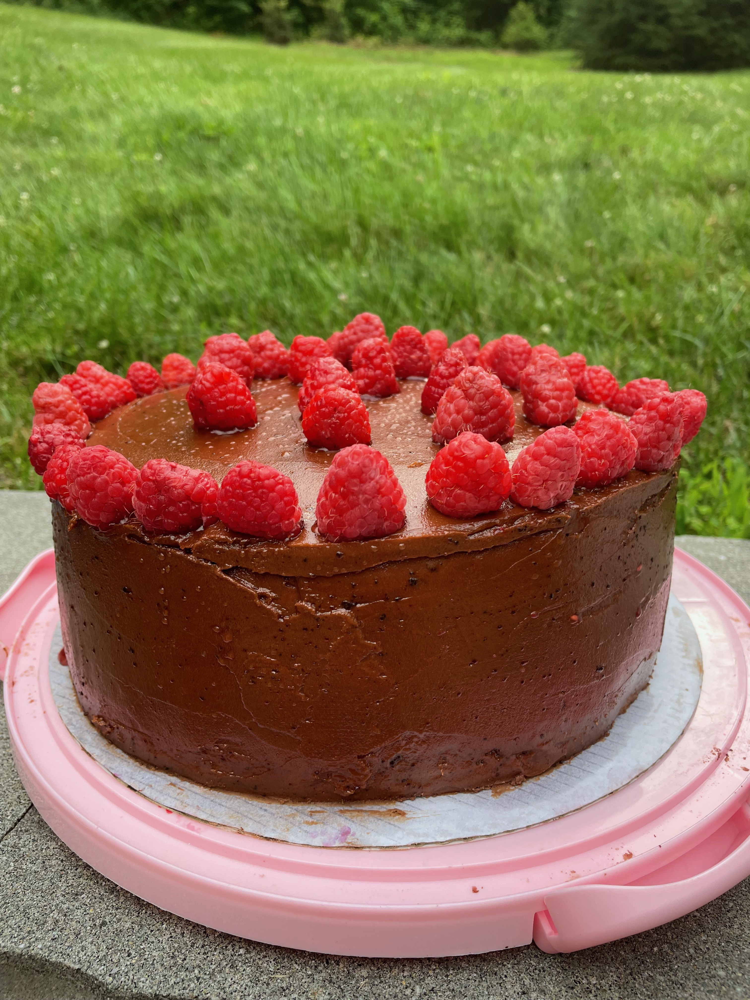
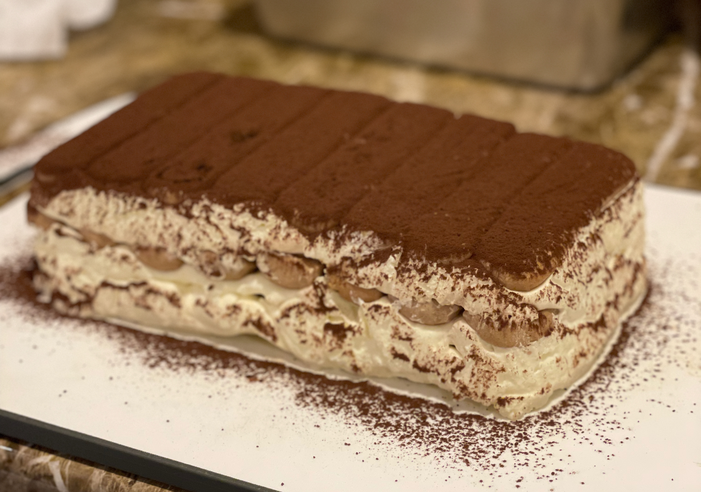
CONTACT
If for some reason you wanna get in touch?